Who are most likely to get affected by COVID-19?
The number of cases from across the world shows that people of all ages can contract the COVID-19 disease. But the risk of becoming severely ill with the coronavirus appears to increase infant and above 60 years. According to the World Health Organisation(WHO), those with pre-existing non-communicable diseases also appear to be more vulnerable to becoming severely ill with the virus.
Importance of Good Nutrition.
Your food choices each day affect your health — how you feel today, tomorrow, and in the future. Good nutrition is an important part of leading a healthy lifestyle. Combined with physical activity, your diet can help you to reach and maintain a healthy weight, reduce your risk of chronic diseases (like heart disease and cancer), and promote your overall health.
Healthy Eating for Seniors.
As you age, Diet has an important role in maintaining the overall health of a person irrespective of the age groups. A diet plan for 70-year-olds is significantly different from adults and middle-aged individuals. Individuals get affected in many ways in their old age and are vulnerable to infections and diseases than middle-aged people. Therefore, healthy diet plan and regular physical activity is the only choice they have to combat diseases and old-age health problems.
A Well-Balanced Diet.
Eating a well-balanced diet is an important part of staying healthy as you age. It can help you maintain a healthy weight, stay energized, and get the nutrients you need. It also lowers your risk of developing chronic health conditions, such as heart disease and diabetes To meet your nutritional needs, eat foods that are rich in fiber, vitamins, minerals, and other nutrients. Limit foods that are high in processed sugars, saturated and trans fats, and salt. You may also have to adjust your diet to manage chronic health conditions.
List of Daily Healthy Food Intake at the Age of 70 years
Your body changes as you get older, but a balanced diet will help you stay healthy. Here’s what to eat and how to keep healthy as you get older. Whatever your age, it’s important to eat a healthy, balanced diet. This means you should
try to eat:
1. Protein:-
Eggs, milk, lean meat, chicken, beans, and lentils are excellent protein sources to keep elderly healthy.2. Nuts and Seeds
Walnuts, cashews, almonds, sunflower seeds, flax seeds and pumpkin seeds are healthy food options for old-age people3. Pulses and Grains
Lentils, chick peas, brown rice and whole wheat products should also be incorporated in a diet plan for 70-year olds4. Fruits
Blackberries, strawberries, raspberries, kiwi, peaches, mango, melon and apples should be incorporated in a dietary regimen.5. Vegetables
Carrots, sweet potato, tomatoes, spinach, broccoli, cabbage, onions, and avocados are the healthy vegetables to be included in the diet plan of a 70-year old.6. Dairy
Getting enough dairy products daily can help the elderly avoid bone thinning and elevated blood pressure. If you’re a 70-year-old man or woman, you should have 3 cups of dairy products every day. A cup of yogurt or milk, 2 cups of cottage cheese, 1.5 ounces of hard cheese such as Parmesan and 1/3 cup of shredded cheese all count as a 1-cup dairy serving. Avoid full-fat dairy items in favor of low- or non-fat milk or yogurt and reduced-fat cheese in order to control your fat intake.7. Dairy
Getting enough dairy products daily can help the elderly avoid bone thinning and elevated blood pressure. If you’re a 70-year-old man or woman, you should have 3 cups of dairy products every day. A cup of yogurt or milk, 2 cups of cottage cheese, 1.5 ounces of hard cheese such as Parmesan and 1/3 cup of shredded cheese all count as a 1-cup dairy serving. Avoid full-fat dairy items in favor of low- or non-fat milk or yogurt and reduced-fat cheese in order to control your fat intake.8. Fish
Salmon, mackerel, sardines, herring, tuna, and trout are healthy food options for old age.Read this Blog, Care4 Hygiene shared Healthy Menu Diet Plan for a 70-year-Old Couple. By just using a few guidelines for planning healthy meals, a senior can make big changes in his healthConsider Supplements
You may find it hard to get some nutrients in your diet, especially if you have to avoid some foods. Ask your doctor if you should take a vitamin or mineral supplement, such as calcium, vitamin D, magnesium, or vitamin B-12. These specific vitamins are often poorly absorbed or not consumed enough by older Americans. Some supplements can interfere with certain medications. Ask your doctor or pharmacist about potential side effects before starting a new supplement or medication
Stay Hydrated and Stay Social
As you age, you may not notice when you’re thirsty. Make sure you’re drinking fluids on a regular basis. Aim for eight 8-ounce glasses of water daily. You can also get some water from juice, tea, soup, or even water-rich fruits and
vegetables.
When you can, eat with friends and family members. Social interaction can turn mealtimes into an enjoyable affair, rather than a chore you’d rather skip
Healthy diet to infants.
Infant nutrition means making sure your baby is getting enough nutrients during his first year. Nutrients are calories, protein, fat, vitamins, and minerals. Making sure your baby has good nutrition can protect him against disease.
It also helps him stay healthy as he grows older.
Breast milk contains antibodies that help your baby fight off viruses and bacteria. Breastfeeding lowers your baby's risk of having asthma or allergies. Plus, babies who are
breastfed exclusively for the first 6 months.
Step you can take
Babies do not need solid foods until they are about 6 months old. Before 6 months, your baby only needs breast milk and a vitamin D supplement.For babies 6 months and older:
Keep offering breast milk and a vitamin D supplement.
Start with small servings such as 5-10 mL (1-2 tsp) and slowly increase the amounts based on your baby's hunger. At first, she may only eat 30-45 mL (2-3 Tbsp) of food all day.
Examples of portions to offer your baby are:
1. 30-45 mL (2-3 tbsp) cooked vegetables, grains, meats or meat alternatives.
2. 45-75 mL (3 -5 tbsp) soft fruit.
3. ½ medium egg.
4. 60-125 mL (¼ - ½ cup) prepared hot or cold cereal.
5. 30 mL (2 tbsp) shredded
cheese or yogurt.
6. ½ of a piece of toast cut into strips.
7. Let your baby decide how much to eat of the food you offer.
Sample Meals for Baby: 6-9 months of age
By the time your baby is 9 months old, offer 2 to 3 meals and 1 to 2 snacks a day. As well as breast milk, offer:
| Mealtimes | Sample Meals |
|---|---|
| Breakfast | 1. iron fortified infant cereal. 2. kiwi, chopped. 3. water in a cup. |
| Lunch | 1 chicken, minced or chickpeas, mashed. 2 cooked sweet potato, mashed. 3 water in a cup. |
| Snack | pear, mashed |
| Dinner | 1 ground beef or lentils. 2 brown rice. 3 cooked broccoli, mashed. 4 water in a cup. |
Sample Meals for Baby: 9-12 months of age
By the time your baby is 12 months old, offer 3 meals and 1 to 2 snacks a day. As well as breast milk, offer:
| Mealtimes | Sample Meals |
|---|---|
| Breakfast | 1. iron fortified infant cereal. 2. kiwi, chopped. 3. water in a cup. |
| Snack | whole wheat toast with thinly spread peanut butter, cut into strips |
| Lunch | 1. canned salmon, mashed. 2. cooked carrot, chopped. 3. avocado, chopped. 4. yogurt. 5. water in a cup. |
| Snack | whole grain crackers |
| Dinner | 1 chicken, chopped. 2 brown rice. 3 cooked green beans, chopped. 4 cantaloupe, chopped. 5 water in a cup. |
Importance of immunity to vulnerable peoples to figth with covid-19.
As you age, your immune system starts to weaken and becomes less efficient when responding to infections. This is why the risk of severe complications from the coronavirus outbreak is higher for older adults, according to the Centers for Disease Control and Prevention (CDC).Our diet plan will help you to improve your immunity. You can also download our application from playstore to track your diet plan. stay healthy stay safe.

 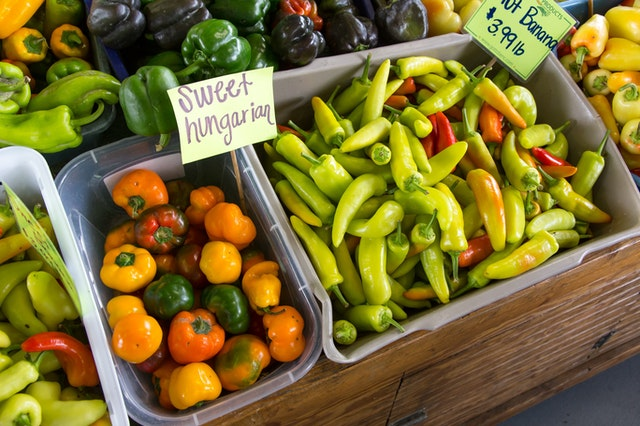
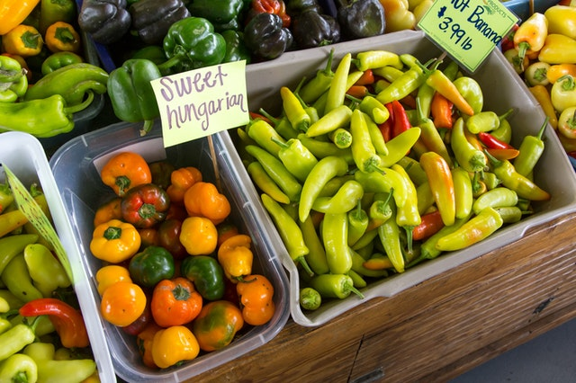
 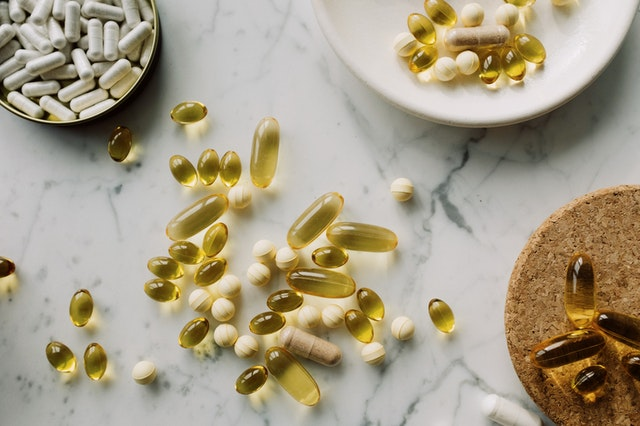
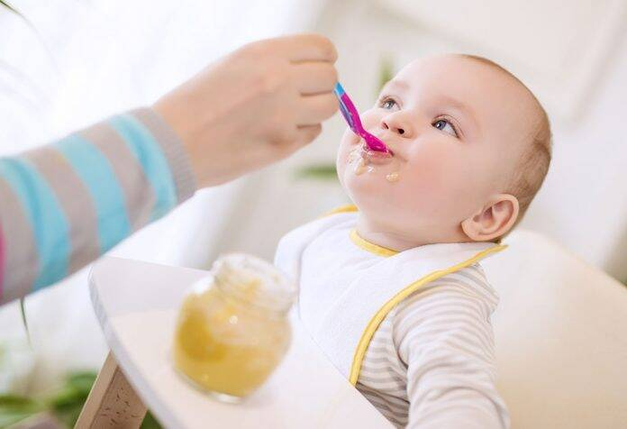
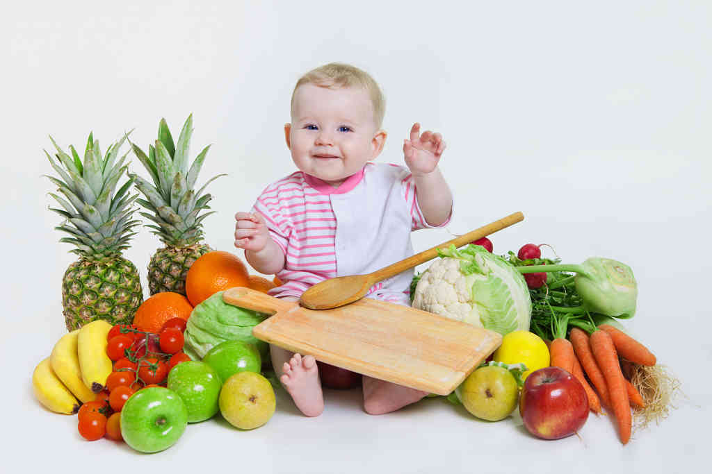
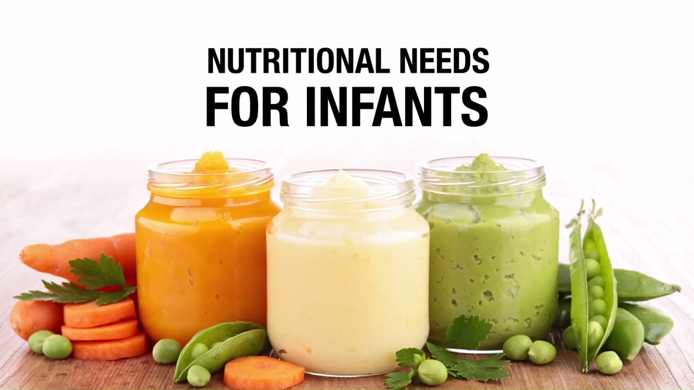
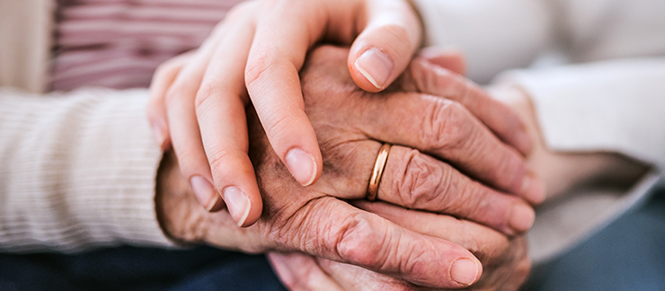>
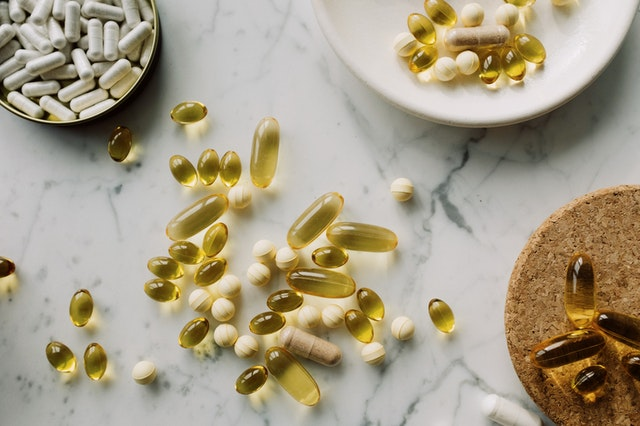
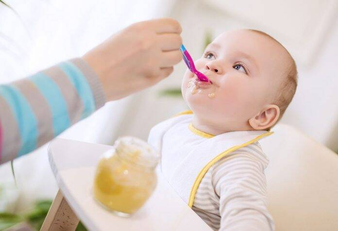
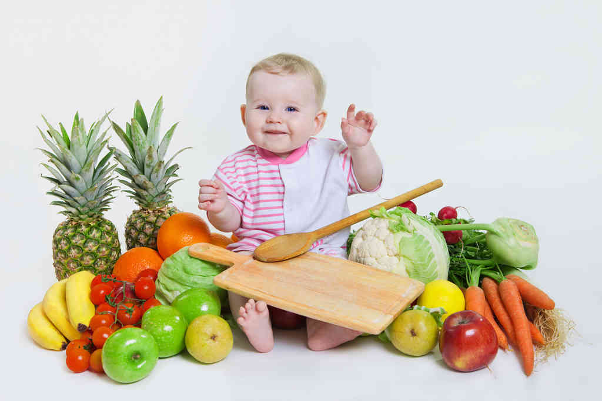
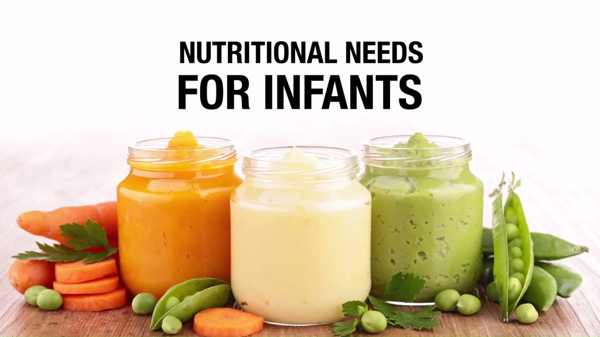
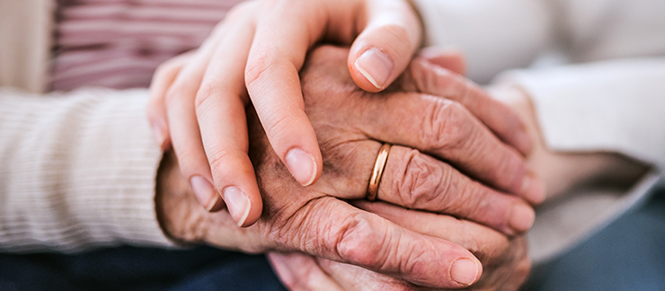>